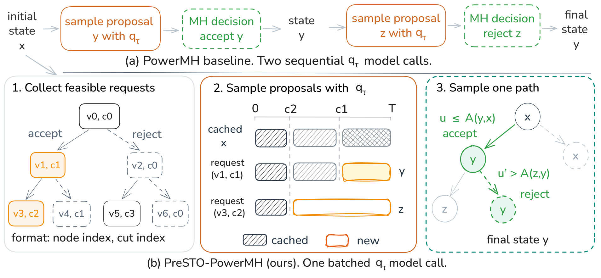
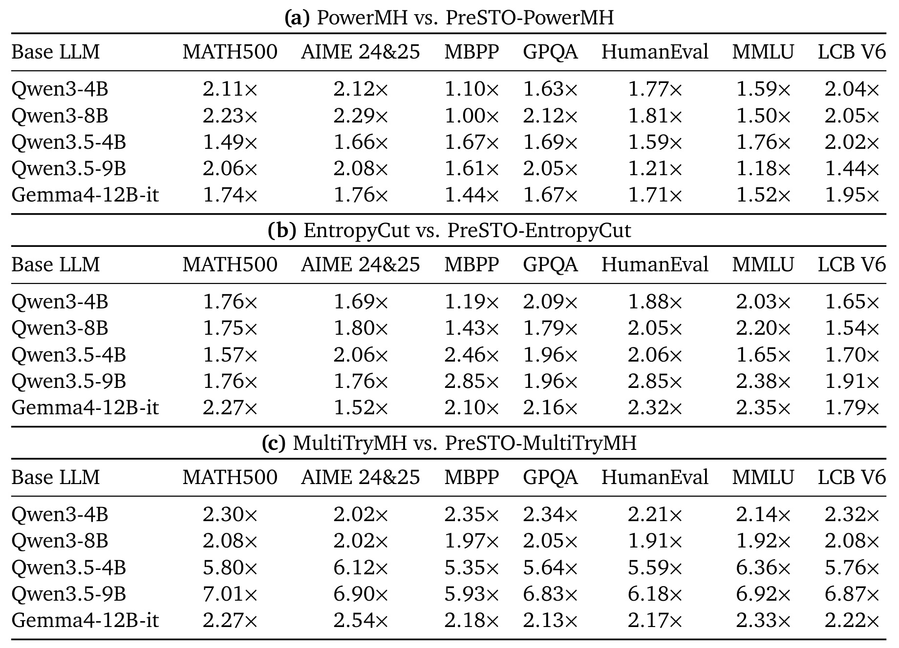
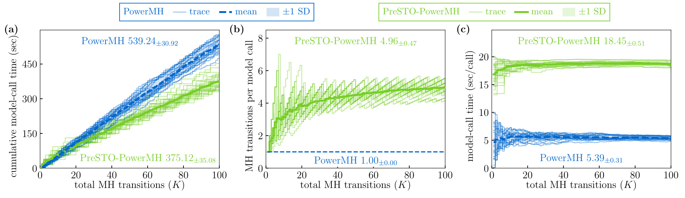
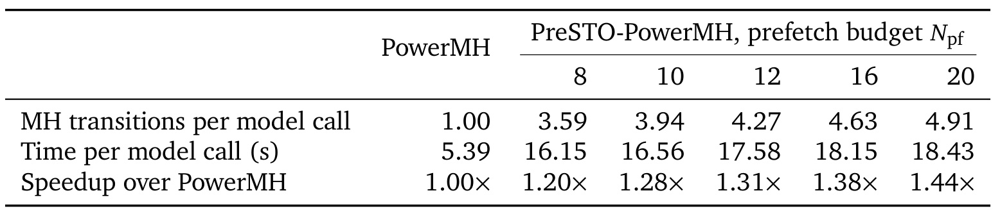
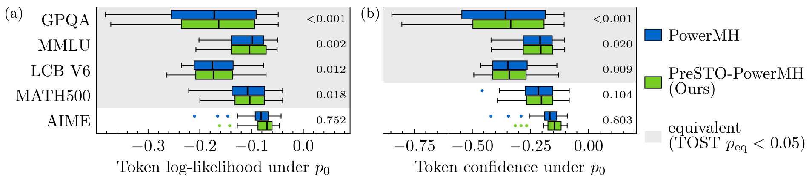
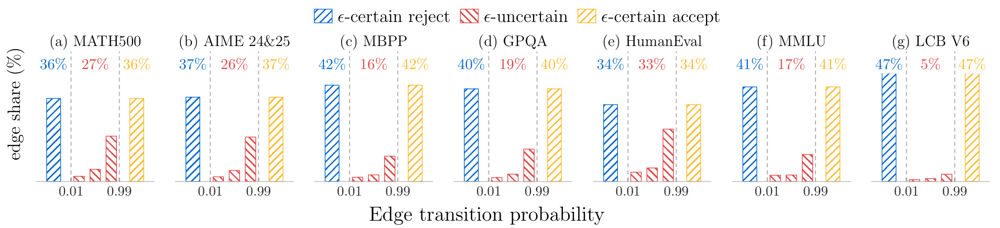
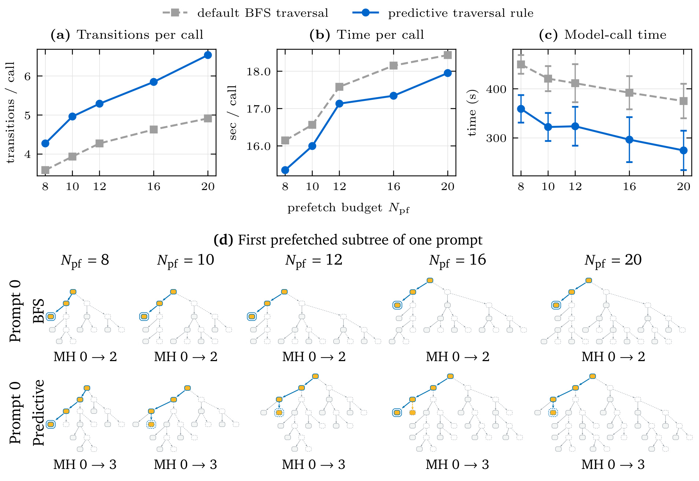
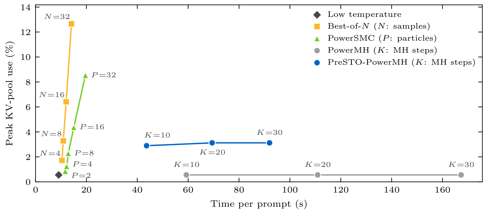

PreSTO：保持 MH 转移核的预测子树预取
PreSTO: Predictive Subtree Prefetching for Fast LLM Power Sampling 研究如何加速大模型的幂采样。第一作者 Nan Jiang 来自得克萨斯大学埃尔帕索分校，合作作者 Panagiotis Theodoropoulos、Wei Deng 分别来自佐治亚理工学院与摩根士丹利；机构对应关系以原论文首页为准。论文于 2026 年 10 月 9 日公开，本文依据 10 月 13 日核验的完整主文与附录进行精读，唯一论文入口为 arXiv:2610.13171。官方代码 与项目页可访问，代码仓库包含源代码目录；本次没有运行作者实现，也没有复现实验。
幂采样能够通过锐化基础模型的分布改善测试时推理，但 PowerMH 的每次接受或拒绝决定下一次提案从哪个状态生成，串行更新因此带来很高的推理成本。现有加速路线常常改变采样器或模型；本文希望提前批量生成未来可能需要的提案，在保持原有 MH 转移核的条件下减少串行模型调用。
1. 背景和问题
大模型推理质量的提升可以来自训练阶段，也可以来自推理阶段重新分配计算预算。本文属于后一条路线。它并不训练新的推理模型，而是利用已有模型对完整输出序列的概率，改变抽样时更容易出现哪些答案。这里的目标分布是基础模型序列概率的幂分布：当幂指数大于一，高概率续写的相对权重会提高，低概率续写的权重会降低。引言引用的前序工作认为，这种锐化可以在部分推理任务中取得接近强化学习后训练的效果；这是本文的动机背景，不能据此认定所有模型都能用采样替代后训练，也不能把这些前序论文的正确率结果当作 PreSTO 自己的新实验。
序列层面的幂分布和每个词元独立降温并不相同。 自回归模型逐词元生成时，温度会改变每个局部条件分布的归一化因子，而这些因子依赖当前前缀。完整序列概率直接取幂后，理想分布需要对全部未来续写重新归一化，不能简单把所有局部概率降温再相乘就认为精确实现了同一个目标。PowerMH 因此引入马尔可夫链，通过提案与接受率校正来接近想要的目标分布。理解这个差别，才能知道为什么论文反复强调保持接受规则：如果调度加速同时改变了该规则，最后得到的可能只是另一种更便宜的近似采样器。
PowerMH 的基本状态是一段已经生成的回答。在一个阶段，它随机选择切点，保留切点之前的前缀，重新生成后缀，随后依据目标分布与提案分布的比值决定是否接受这次改写。接受时，新的后缀成为下一状态的一部分；拒绝时，保留之前的回答。无论接受还是拒绝，链都推进了一次 MH 转移。拒绝并不是没有执行一个步骤，也不是浪费到可以直接删除的状态更新；它本身是正确转移核的重要组成部分。本文的效率指标数的是已经真实完成的转移，而不是被接受的提案数量，更不是新增的词元数。
串行依赖恰好发生在这些状态更新之间。第一次提案从当前回答出发，第二次提案的条件前缀由第一次是否被接受决定。因此常规实现要先完成生成，再计算接受率并抽取接受随机数，才能知道下一次应该向模型提交什么请求。即便 GPU 可以处理多个请求，一个采样链通常仍然只能逐次调用模型。对于需要大量链步骤的设置，这种等待不断重复，使整个推理过程延迟很高。原文引用的 MATH500 前序结果是最多生成标准抽样约 8.8 倍的词元；自己的 LCB V6 案例中，十、二十、三十步 PowerMH 分别耗时单样本低温采样的 6.5、12.2、18.4 倍。这些数字的对象、任务与链步数不同，不能混成一个统一代价估计。
已有改进大致从四处介入：换成序贯蒙特卡洛或副本交换等采样机制，近似原有幂目标以降低成本，改进切点选择让链更容易访问有价值的后缀，或改变训练及最终回答目标。EntropyCut 利用词元熵变化挑选切点，MultiTryMH 在每次转移中考虑多个提案，都属于提案机制相关改进。PreSTO 希望对这些已经存在的采样器提供另一个层次的帮助：只改变请求何时生成与如何合批，在后续做出真实接受判断时仍然使用原采样器规则。因此它的价值在于减少调度上的串行瓶颈，而不是宣称发现了更好的推理目标或更强的奖励函数。
作者借用了经典 MCMC 预取的想法。未来所有接受与拒绝结果可以排列成一棵二叉树，而一次真实链执行只会沿其中一条根到叶路径前进。若路径上未来需要的候选已经提前生成，就可以连续执行几次便宜的概率判断，再发起下一轮昂贵模型调用。不过对大模型，预生成一条完整后缀本身很贵，无法像廉价数值提案那样展开整棵树。深度增加时可能结果组合快速增长，但最后只用到其中很少一部分。因此本文需要同时回答两件事：哪些未来请求能够在前一个候选尚未产生时合法生成，以及有限预算究竟应该分给树中的哪些节点。
这两个问题分别对应本文的可行切点条件与预测遍历机制。前者利用后缀改写不会影响较早前缀的性质，在不改变条件分布的情况下提前生成一部分请求；后者利用接受率经常接近零或一的观察，减少对不太可能经过的分支投入。两者作用不同：可行性关乎正确性，预测准确率关乎效率。即使预测错了，真正遍历时也必须允许走预测认为不太可能的分支，并在需要时开启后续批次。把预测当作直接剪掉真实概率较小的路径，会从调度优化滑向采样近似，越过本文理论保证的边界。
对于推荐与检索研究，本文最直接的关联是大模型推理服务的请求编排，而不是传统点击率预估。推荐系统若采用生成式候选改写、推理型重排或昂贵的候选序列抽样，可能同样遇到状态更新串行、共享前缀重复计算和未使用候选造成资源开销等问题。但要迁移本文，必须先找到目标系统的真实转移状态、随机规则及可共享前缀条件；普通召回或排序打分不存在这种 MH 链时，不能直接套用其核保持证明。本文主要解决的是一类特定推理预算的执行效率，迁移价值在于识别可预取的条件独立工作，而不是给所有在线推荐链路提供通用加速倍数。
还需要区分这棵树与树状投机解码。后者的分支通常表示不同的草稿词元续写，验证后提交一段通过检查的词元前缀；本文的分支表示完整后缀提案的接受或拒绝。预取的进度单位是一次链转移，其中拒绝也计数，不是验证通过的词元数。两者都能借助树和批量计算减少串行轮次，但树节点所表示的随机对象、正确性证明与缓存关系并不相同，所以不能把已有投机解码的吞吐倍数当作本文的预期收益。
2. 方法
2.1 后缀重采样与可批处理的决策树
首先明确原采样器的目标与提案。基础模型记为 $p_0$，给定提示 $x_0$ 与长度为 $n$ 的回答，幂采样目标为原文式 2；分块阶段只需把回答长度换成当前阶段的 $T=\ell B$。这一目标没有新的训练参数，PreSTO 也不对基础模型进行梯度更新。模型继续承担提案生成与词元概率计算，额外预测器只负责后续预算分配。
符号解释：$x_0$ 是提示，$x_{1:n}$ 是生成的回答，$p_0$ 是基础模型的完整序列分布，$\alpha$ 是幂指数，$\pi_\alpha$ 是锐化后的目标分布，比例符号表示省略统一的归一化常数。$\alpha>1$ 提高高似然序列的相对概率，但高似然并不自动等于答案正确，因此这里首先是分布目标，而不是准确率保证。 当前链状态为 $x^{(k)}$，随机切点为 $c$。提案保留前缀并自回归生成新后缀，原文式 5 为：
符号解释：$k$ 是已完成的 MH 转移编号，$T$ 是该阶段固定的回答长度，$c$ 是切点，$y$ 是候选序列，$q_\tau$ 是基础模型在提案温度 $\tau$ 下的词元条件分布。PowerMH 的 $c$ 在零至 $T-1$ 上均匀抽取，候选只改写后缀；这个切点分布以及生成随机输入都需要在提前生成时保持，而不能因是否方便合批而重新抽样。 原文式 1 的 MH 校正使用目标概率与双向提案概率：
符号解释：$x$ 是当前状态，$y$ 是候选状态，$\pi$ 是本阶段目标分布，$q(y\mid x)$ 与 $q(x\mid y)$ 分别是前向和反向提案概率，$A$ 是接受概率。抽取均匀随机数并与 $A$ 比较决定下一状态；这一步不由预测器决定，也不会因为候选是提前产生的而换成另一个接受阈值。 合法预取依赖切点顺序。 若从 $x$ 在切点 $c$ 改写得到 $y$，后续候选在切点 $c'$ 改写且满足 $c'\le c$，它需要的前缀仍然等于当前已知的 $x$ 前缀。因此后续提案可以提前从 $x$ 的相应前缀生成。这是原文 Condition 1，而不是对语义相似度的猜测：
符号解释：$c'$ 是接受子节点对应请求的切点，$z$ 是该请求产生的后续候选，$c$ 是父请求切点。前缀恒等确保两种生成安排使用同一个条件分布。若 $c'>c$，所需前缀可能包含尚未生成的新词元，此请求必须延期；延期时保留原来切点，不能为了当前批次可行而重抽切点。拒绝分支保留父状态，因此不会额外引入一段未知前缀。

Figure 2 用两次转移把整个信息流画清楚。上方常规链先从状态 $x$ 生成候选 $y$，接受后再从 $y$ 生成 $z$，拒绝第二次候选后最终仍为 $y$。两次生成分别发生在接受判断的前后，所以需要两次串行模型调用。下方左侧首先枚举接受与拒绝的未来分支，并给请求绑定节点和切点；并不是每个树节点都要新生成一次回答，拒绝子节点可以复用父状态。中间把满足前缀条件的两个后缀请求放进同一次模型调用，其中较早前缀可同时复用，较长前缀还可以进一步利用已经存在的缓存。右侧最后才抽取真实接受随机数，先接受 $y$ 再拒绝 $z$，得到与上方相同的状态路径。
图中第二次候选虽然在第一次接受之前就已经产生，却没有依赖未知的第一次新后缀，因为第二个切点位于第一个切点之前。能够提前知道的是生成所需的前缀，不能提前知道的是实际接受结果。这也是该图区别于普通批量生成的地方：它不是简单把两个独立回答一起生成，也不是并行跑两条互不相关的链，而是在同一条链的多个可能未来之间投机执行。最终消耗的链路径仍是串行判定出来的，只是路径上的昂贵候选计算已经完成。未走到的候选会成为额外工作，这种浪费无法由“核保持”消除，只能通过预算与预测遍历来降低。 从复现角度，左侧树的请求记录、中间序列概率和右侧随机判断必须能够一一对应。若实现丢失了延期请求绑定的切点，或者把某个缓存中的候选误用到另一个条件前缀，即使吞吐提高，也不再满足论文证明。这个图同时提示了正确性的核查单位：应该比较每个已提交的 MH 转移及其输入状态，而不能只比较最后输出的字符串或一次模型调用的候选数量。
2.2 批量评分、真实路径与转移核保持
收集完成的请求送入支持前缀缓存的模型后端，得到候选后缀及词元级概率。共享前缀的 KV 状态只需计算一次，不同请求的后缀仍按各自的自回归生成顺序完成。vLLM 与 SGLang 的缓存实现不同，前者使用带哈希索引的固定块，后者可以用基数树表示前缀段；本文利用的是前缀状态可复用这个共同性质。生成得到的候选概率并不足以完成校正，还需要旧状态的后缀概率和基础模型的未降温概率。原文式 6 将所有项放在对数域，减少长序列概率连乘的数值下溢。
符号解释：$x_{c+1:T}$ 是旧后缀，$y_{c+1:T}$ 是新后缀，$q_\tau$ 的两项给出反向与前向提案的对数比，$p_0$ 的两项给出基础模型后缀似然的变化，$\alpha$ 将该变化转成幂目标的对数比。公共前缀的目标概率与固定长度归一化常数在比值中抵消。每个后缀对数概率都是沿后缀位置累加词元条件对数概率，不能混用另一条生成路径的评分。 作者修改了 vLLM 引擎，因为原生概率返回设置通常只能统一选择处理前或处理后的 logits。实现保留未经温度缩放与其他处理的浮点 logits，再从同一次前向中取得基础模型概率、提案概率以及 EntropyCut 需要的词元熵。因此“兼容现代服务引擎”不等于不需要引擎改动。若只取得降温后的概率，把它误作 $p_0$，接受率会改变；若为了评分多发额外调用，论文中的单次成本与加速比也可能无法重现。需要把双分布评分能力和缓存复用一起视作部署前提。
拿到评分子树后，从根开始按原始接受率依次走左边或右边。遇到叶子或尚未生成的延期请求，就在新状态上开启下一批。每次完成真实转移后累计步数，当前阶段最多完成剩余的 $K-k$ 步，预取树也相应设置深度上限；不允许为了用完已生成的候选超出原来预算。这保证比较的是同样数量的链更新，而不是一个方法执行了更多或更少的推理步骤。作者的 Proposition 1 用相同随机输入构造耦合：
符号解释：$x_{\mathrm{pf}}^{(k)}$ 与 $x_{\mathrm{MH}}^{(k)}$ 分别是预取与顺序执行在第 $k$ 个已提交转移后的状态，$P_{\mathrm{MH}}$ 是原始单步转移核，$P_{\mathrm{pf},K}$ 表示预取执行完成 $K$ 步后的核。这个相等关系依赖起始状态相同、合法前缀、每个决策的切点和抽样随机输入独立且遵守原采样器规律、延期保留输入、需要的候选最终得到计算，以及真正执行时保留两种可能结果并使用精确接受规则。 核不变不等于有限步已经精确收敛。 原 PowerMH 在有限步后的偏差、混合速度与目标是否适合任务都仍然存在。该证明说预取安排不会再额外改变原链的分布，不能解释为一百步就已从精确幂分布取到独立样本，也不能解释为输出答案准确率必然不变。对于 EntropyCut 等状态相关切点方案，还需要确保各自随机规则及接受机制得到保留；本文把预取扩展到这些实现并报告实验，但理论论证最直接写出的对象是 PreSTO-PowerMH。
2.3 预测到达概率与预算动态规划
默认广度优先搜索按树层次分配请求，但真实路径往往只穿过很窄的区域。作者把接受概率小于等于 $\epsilon$ 的决策归为近确定拒绝，大于等于 $1-\epsilon$ 的归为近确定接受，其余是不确定决策，默认 $\epsilon=0.01$。这种舍入首先用于描述树和预算估计，并不替代真正执行时的接受率。设已展开节点集合为 $I$，节点到达概率等于祖先分支概率的乘积，则原文式 11、12 给出期望推进次数：
符号解释：$v_0$ 是根，$v^+$ 与 $v^-$ 是接受和拒绝子节点，$h$ 是用于分析的分支概率，$R(v)$ 是到达节点 $v$ 的权重，$F_I$ 是一次树遍历预计完成的转移数。每到达一个已展开节点都推进一次，无论最后接受还是拒绝，所以期望值可以由到达指示变量求和。集合要求祖先封闭：不能展开一个后代却让链在尚未展开的祖先处就停止。 真实接受概率生成后才知道，因此请求收集阶段用三分类逻辑回归，从切点比例 $c/T$ 预测近确定接受、近确定拒绝和不确定的概率。原文式 14 将三类概率转成分支估计：
符号解释：$\widehat P_{\mathrm{accept}}$ 与 $\widehat P_{\mathrm{reject}}$ 是分类器输出的两个类别概率，不是最终 MH 接受随机判断；剩余概率属于不确定类。该式把确定接受取为一、确定拒绝取为零、不确定类取为二分之一加权平均。附录证明在只知道不确定类接受概率区间时，中点估计有最小最坏误差；这不消除分类器误差，也不保证预测器已经准确知道未来路径。 以预测权重代替未知权重，就得到原文式 17 的预算分配：
符号解释：$I_{\max}$ 是满足可行切点条件与深度限制的候选节点集合，$N_{\mathrm{pf}}$ 是最多生成的后缀请求数，$\widehat R(v)$ 由预测分支概率沿路径相乘得到。优化目标是预计每次调用完成多少次转移；它没有直接对候选长度、显存峰值或每次调用耗时建模，因此最优性只针对这个代理目标，不是总服务延迟的无条件全局最优。 原文式 19 用动态规划求解：展开当前节点花一个请求，剩余请求分给接受与拒绝子树，比较所有分法。
符号解释：$V(v,b)$ 是从节点 $v$ 开始、最多使用 $b$ 个请求时能够获得的最大预测转移数，$m$ 是分给接受子树的预算，拒绝子树得到 $b-1-m$。当 $b=0$ 或节点不在可展开集合时取零。这种递归把可行性、祖先封闭与剩余预算一起纳入，而不只是按照某个节点分数排序。分类器在收集之前给出预测，动态规划决定这轮生成哪些候选，模型再真正生成和评分，最后 MH 遍历仍使用原接受率，三者的先后顺序不可交换。
该策略还排除了当前批次在延期节点之后不可到达的请求。原文指出默认广度优先实现会把一些这种请求继续放入队列，预算为十的指定 LCB 案例中它们占已发请求的约 19%。因此预测遍历相对广度优先的收益同时包含概率感知分配与避免不可达工作，不能全部归因于分类器预测更准确。预测器也只用一个低成本切点特征，并非另一个大模型；本文所呈现的设计重点是用便宜估计指导昂贵投机工作，而不是训练一个复杂策略网络接管采样。
3. 实验结果
3.1 固定链预算的跨模型与跨任务比较
实验将三个顺序采样器分别与各自的 PreSTO 版本配对。五个基础模型是 Qwen3-4B、Qwen3-8B、Qwen3.5-4B、Qwen3.5-9B 与 Gemma4-12B-it；七个数据集覆盖 MATH500、AIME 24&25 的数学推理，HumanEval、MBPP、LCB V6 的代码生成，以及 GPQA、MMLU 的科学和常识知识。每个数据集实际只运行前二十条提示，数据集完整规模不等于本次评测样本规模。三采样器乘五模型乘七任务得到 105 个配置，但这些配置共享小型提示子集，不能把配置数量理解成充分覆盖所有任务样本。
主实验采用单块 1024 词元回答，不在结束词元处提前停止，真实 MH 转移数为一百，幂指数为四，默认预取预算二十，默认遍历为广度优先，种子为 10086。PowerMH 等常规提案温度为 0.25，MultiTryMH 每步四候选且温度来自 0.25、0.5、1.0。硬件是单个 H100 96GB，来自 GH200 Grace Hopper 平台；软件基于修改过的 vLLM V1 引擎。配对时保持基础模型、提示、初始化、幂目标和提案规则一致，主要时间指标是累计模型调用时间的平均值之比，而不是完整线上服务所有环节的墙钟时间。

Table 1 的三块分别以对应顺序采样器为分母基线对象，列是七个任务，行是五个模型。某格的倍数意味着顺序版本平均累计模型调用时间除以其预取版本时间；不同块之间不能直接比较模型的绝对速度，也不能把它读成回答正确率提升。PowerMH 的中位加速为 1.71 倍，范围一至 2.29 倍；EntropyCut 的中位加速为 1.91 倍，范围 1.19 至 2.85 倍；MultiTryMH 的中位加速为 2.33 倍，范围 1.91 至 7.01 倍。三者对应不同提案机制，摘要三个数字应分别引用，而不是选择最高一个作为 PreSTO 的统一加速水平。
结果在全部 105 配置中没有比各自基线慢，96 个配置至少达到 1.5 倍，但弱增益也有清楚的边界。PowerMH 配合 Qwen3-8B 在 MBPP 上只有一倍，即基本没有加速；Qwen3.5-9B 在 HumanEval 与 MMLU 上只有 1.21 与 1.18 倍，LCB V6 为 1.44 倍。这些格子表明，更多请求合批并不会自动转成大幅延迟下降。若真实路径利用候选的比例不高，而单次调用已经变慢，减少调用次数所得收益可能大部分被抵消。作者给出的低增益分析也指向每次只能完成较少转移以及调用成本约两倍的组合，而不是把全部任务差异归结为模型大小。
MultiTryMH 的部分大倍数带有实现因素。顺序实现对候选在三种温度下反复评分，而 PreSTO 版本复用生成时得到的概率，因此相对收益不全来自同时预取多次未来转移。Qwen3.5 两个模型出现五至七倍数值尤其应连同该实现差异阅读。要判断纯调度机制的收益，应该补一个对称的概率复用基线，再保持其他实现一致。当前表支持“这些配对实现更快”，不能单独证明所有后端上的多提案采样都能获得同等倍数。对于生产环境，优先寻找和自己后缀长度、评分方式、缓存行为相近的格子，再分析时间拆解，比只读中位数更有价值。
3.2 调用减少、单次变慢与预算消融
模型调用总时间可拆成次数与每次成本。以对应配置的汇总量为口径，原文式 20 的含义是：
符号解释：$S$ 是加速比，$C_{\mathrm{seq}}$ 与 $C_{\mathrm{pf}}$ 是顺序和预取的模型调用次数，$t_{\mathrm{seq}}$ 与 $t_{\mathrm{pf}}$ 是对应每次调用平均耗时。次数减少必须超过每次调用变贵的比例才能得到净加速。平均“每提示的转移/调用比”和“汇总调用数的比”属于不同聚合口径，不能在小数末位强行相等。

Figure 5 固定 Qwen3.5-9B 与 LCB V6，横轴始终是实际完成的 MH 转移数。左图纵轴是累计模型调用秒数，蓝色顺序链在一百步时为 539.24 秒左右，绿色预取链约为 375.12 秒，因此净加速约 1.44 倍；细线是单提示轨迹，粗虚线是平均，阴影表示一倍标准差。中图的纵轴是每次模型调用实现多少转移，顺序链固定为一，预取按每提示比值平均约为 4.96。右图则显示预取每次调用约 18.45 秒，明显高于顺序版本的约 5.39 秒。绿色曲线在左侧更低，和绿色曲线在右侧更高同时成立，正是该论文的成本交换机制。
作者以均值比给出的调用减少量约为 4.92 倍，每次耗时增加约为 3.42 倍，两者相除解释了总加速。不能只报道“减少近五倍调用”并推断用户等待时间缩短近五倍；一次批量调用包含多条完整后缀，很多候选最后不会被真实路径使用，仍要占用计算与缓存。图上转移进度随链步数有波动，也提示每一轮用到多少预取结果并不固定，延迟分布与均值会同时受到提示长度、切点和随机接受结果影响。原文用相同的一百步预算对齐横轴，因此这里的节省并不来源于少做几十步链更新。
这个案例有助于判断预取适用性，却还不能替代整机吞吐评估。单提示顺序执行时，合批有机会利用空闲的并行能力；如果服务器已被大量独立用户请求填满，额外预取可能挤占其他请求所需的资源。原文没有用 Figure 5 证明高并发、多租户场景的整体收益，也没有给出用户尾延迟的完整分位数。实际迁移时，应该同时记录预取候选数、实际使用数、每次批量耗时、缓存命中和排队时间，以确定计算浪费能否被减少串行轮次的收益覆盖。

Table 2 保留了表头中的预算和三个指标，以同一任务、同一模型比较八、十、十二、十六、二十个请求。预取预算从八增至二十时，按汇总口径的每次调用转移数从 3.59 提高到 4.91，加速比从 1.20 提高到 1.44，说明更大的树在这个区间中确实能让真实路径继续走得更远。与此同时，每次调用耗时从 16.15 秒提高到 18.43 秒，比顺序的 5.39 秒高得多。预算增加两倍多，真实转移的增幅和总时间增益都远低于这个倍数，不能把预算视作线性扩展的加速旋钮。
表中的两种成本都来自真实生成任务，而不是预算计数的抽象变化。无论候选后来是否被访问，预取批次都已为它们生成后缀，因此提高预算有额外词元与缓存开销。预算二十仅是论文默认值，表只覆盖五个有限取值；不能据此认为预算继续增加必然继续加速，更不能忽略内存容量的约束。作者说明这组预算实验每个预算采用单个种子，记录于同一主机的较短时间范围内，所以这里给出的是受控配置下的趋势，不是跨机器和跨负载都已经稳定的最优预算。
还有一个容易混淆的小差别：Table 2 的 4.91 是一百步除以平均调用数，而 Figure 5 的约 4.96 是每个提示转移/调用比的平均。两者都描述调用利用率，但不是同一个平均算子。在复现中照着表重建时，要先固定聚合口径，否则可能因为平均方式不同而错误判断实现不一致。这种口径区分也适用于线上报表：调用数是全局总量，用户延迟是逐请求样本，两者的均值关系不应未经说明地代入同一个公式。
3.3 输出分布证据与统计等价的范围
论文没有把速度实验包装成新的准确率榜单，而是检查在相同步数后基础模型下的序列统计是否保持。长度归一化对数似然与置信度分别对应原文式 21、22，其中置信度定义为平均负熵：
符号解释：$n$ 是回答长度，$\mathcal V$ 是词表，$u$ 是词表中的词元，$\operatorname{LL}$ 是平均每词元的基础模型对数似然，$\operatorname{Conf}$ 是沿回答前缀计算的平均负熵。更高负熵对应更低分布不确定性；它不是模型显式表达的置信概率，也不是回答正确率。两个采样器的序列用同一基础模型重新评分才有可比性。

Figure 6 固定 Qwen3.5-4B，左面板比较五个数据集的长度归一化对数似然，右面板比较平均负熵。横轴更接近零表示对应统计更高，蓝绿箱线分别是 PowerMH 与 PreSTO-PowerMH。两个箱子的视觉重叠只是分布相近的现象，灰色区域才表示通过配对双单侧检验的等价结论。作者将等价裕度设为顺序基线提示间标准差的 0.2 倍，当差异均值的 90% 置信区间完全落在这个区间中且等价检验概率小于 0.05 时，才认定均值差足够小。这与常见“差异不显著所以相同”不同：检验要求正面证明差异小于指定门槛。
主图十项比较只有七项通过。AIME 的两个统计，以及 MATH500 的置信度没有通过，因为置信区间超出了预设裕度。未通过并不直接证明核改变，也不能删除这些结果后写成全部等价；小样本的波动可能使检验无法给出足够证据。扩展到通过附录重评分检查的八个 PowerMH 配对和十一个 EntropyCut 配对，总共三十八项统计测试中二十九项建立等价，汇总差异在两个统计上也位于指定裕度内。正确表述是这些实验支持输出统计保持，同时保留九项未确认等价的边界。
这种检验只针对两种序列统计的均值差，无法证明两种高维输出分布在所有方面完全一致，也无法用它替代随机输入耦合的数学论证。反过来，理论核不变在实现假设满足时成立，但引擎概率处理、缓存与随机数关联可能在实现中引入偏差，因而实验检查仍有意义。代码任务中最终单元测试通过率、数学答案正确率以及有限步混合都没有被这两个统计充分覆盖。读者应把 Figure 6 当作实现与统计的一层核查，而不是将其扩展为所有任务效果已被证明无损。
3.4 稀疏观察与预测遍历的实测收益

Figure 4 的横轴是边的转移概率，纵轴是对应区间的边占比，蓝色和黄色分别标出近确定拒绝与近确定接受，中间红色是不确定区域。这里同时统计接受与拒绝两条边，所以两端比例接近对称，不能直接把黄色的百分比当作真实链接受率。设置为 Qwen3.5-9B、默认广度优先、预算二十和阈值 0.01。在七个数据集中，两端确定边占比合计约 67% 至 95%，LCB V6 的中间区域只有约 5%，HumanEval 的中间区域约 33%，因此不同任务的树分叉程度明显不同。
这些比例解释为什么预算可能适合向深度分配。若一个节点几乎肯定走同一条分支，平均把预算分给两侧就会产生许多实际不会经过的请求；连续多个这样的决策形成一段近似单链区域，沿高到达概率方向展开可以在同一次调用中覆盖更多链步。但图中的统计来自已经评分的决策，真实生成之前只能预测其类别。作者在附录还扩展了模型与采样器，观察到确定边比例随配置改变；这种观察说明有可利用结构，不足以保证每个提示都能被廉价特征准确预测。

Figure 7 的上半部分把两种遍历在相同预算下的结果拆成三项：每次调用实现的转移数、每次调用时间和累计模型调用时间。蓝色预测遍历在五个预算点都能实现更多转移，也略缩短每次批量调用，所以总时间更低；在该 LCB V6 与 Qwen3.5-9B 案例中，相对广度优先额外加速 1.25 至 1.37 倍。预算二十时，每次调用转移数从 4.91 增至 6.54，体现出预测分配让有限请求覆盖了更长的真实路径。总计一百个提示与预算配对中，九十八个更快，说明仍有个别配对没有获益。
下半部分展示同一个提示的首棵实际预取树，灰色为完整结构，橙色强调概率舍入后可达区域，蓝色标示抽到的 MH 路径。上排广度优先在五个预算下，第一次调用都只完成两步；下排预测树则完成三步。观察树的形状能够看出，这种改善并不是简单让整棵树更大，而是把相同数量的请求安排到更可能经过的祖先封闭区域。节点附近的实线与虚线还编码切点是否满足可行性，路径遇到当前批次不能展开的地方仍然要停止，不能为了多走一步而修改随机切点。
这张图验证的是完整预测遍历规则，而非孤立分类器的收益。该规则同时利用概率权重，并禁止在延期祖先之下选请求；默认广度优先存在一部分当前批次不可达请求，因此两种变化共同贡献了效率差异。实验主要聚焦单个模型与数据集、五个预算，尚不足以证明全 105 配置使用预测遍历都能再提高相同比例。分类器只用切点比例，附录讨论增加特征和隐藏层的对照，说明作者有意控制预测开销；当任务或后缀长度变化时，概率校准与分类数据分布仍需重新评估。动态规划优化的是预计转移次数，如果较早切点带来更长后缀、每次成本升高，实际时间是否下降还要继续测量。
3.5 缓存资源与其他测试时计算路线

Figure 20 把讨论扩展到原采样器之外，横轴是每提示时间，纵轴是峰值 KV 池使用比例，越靠左下越省时间和缓存。黑色菱形表示单样本低温抽样，黄色方块是不同样本数的 Best-of-N，绿色三角是不同粒子数的 PowerSMC，灰色圆点是十、二十、三十步 PowerMH，蓝色圆点是对应步数的预取版本。两组 MH 圆点的比较显示预取确实明显向左移动，但同时向上移动：串行调用变少，峰值缓存占用增加。论文正文指出其缓存增幅低于某些高度并行多样本或粒子配置，这并不意味着没有额外资源代价。
更关键的是所有预取 MH 点仍明显位于单样本低温点右侧。优化一个昂贵采样器不等于已经比最简单的解码更快；它是否值得使用，应当由同预算下的任务质量收益决定。这幅图没有同时提供同轴准确率，因此不能仅凭时间与缓存散点认定任意两个算法具有相同效果，或得出预取一定支配多样本选择。MH 步数、样本数和粒子数是不同计算预算单位，它们的数字大小不能互换。预取在固定 MH 过程内的优点是保留转移行为，跨采样路线则必须增加任务效果与预算公平性的比较。
图中 KV 池占用也不同于全部显存峰值或每词元能耗。词元概率返回、引擎额外保留浮点 logits、模型权重和后缀计算还有其他成本。附录的后端对照进一步显示 vLLM 与 SGLang 上的缓存和时间行为存在差别，不能把某个后端的结果直接搬到另一套服务栈。对于工程落地，应将其看成一项“少轮次、多并行工作”的明确交换：需要控制预算，检查未使用候选的规模，并把真实请求并发和尾延迟纳入评估。作者当前案例支持单提示条件下的加速与资源变化，尚未完成广泛线上负载、真实结束长度和用户体验层面的验证。
4. 总结
PreSTO 的核心贡献是把一个有顺序依赖的随机算法拆成可以提前批量执行的昂贵候选计算，以及仍然依次执行的低成本随机决策。可行切点证明告诉我们什么时候候选可以从已知前缀提前生成，核保持证明告诉我们需要保留哪些随机输入与决策语义，预测预算机制则告诉我们在并非所有分支都值得计算时如何分配请求。三者连起来形成完整的推理执行策略。我的判断是，它对已经采用 MH 幂采样的人具有直接参考价值，对其他推理方案则更适合作为条件独立性与投机工作管理的设计案例。
最值得复用的工程思路，是先写清必须保持的算法接口，再寻找执行顺序的优化空间。对于生成式推荐的候选改写，如果确有后缀重采样与接受校正，可以考虑前缀相同的未来请求是否可合批；对于普通重排任务，则应该先验证是否存在相同状态语义，不能因为也有候选树就默认继承本文证明。预取预算还可以作为服务资源策略的一部分，在缓存紧张或并发高时降低，在独立请求较少时适度增加。不过这些都是迁移假设，本文没有提供推荐业务的线上收益，也没有给出自动按负载选择预算的验证策略。
需要保留的局限至少有四层。第一，主速度矩阵每任务只用前二十条提示，固定单块长度且不提前结束，无法代表自然长度与全量数据分布；样本覆盖的限制也影响统计等价检验的检验力。第二，理论保持原链，不解决原链有限步混合以及高似然和正确答案之间的差距，不能据此保证任意推理任务质量。第三，预取生成未使用后缀，单次调用更慢且峰值缓存更高，当前单提示设置未回答高并发系统中是否仍净受益。第四，MultiTryMH 的部分增益混有评分复用实现差异，纯预取贡献需要更对称的基线。第五，预测遍历主要在指定 LCB 模型设置验证，概率分类与不可达请求清理共同变化，难以单独归因于分类准确率。
后续可以按三个顺序跟进。先用相同随机输入检查每个已提交状态，尤其覆盖延期请求、拒绝分支、深度上限与缓存复用，把核保持的假设转成实现检查；这比只比较终端答案更容易定位问题。再建立对称的评分复用和祖先封闭广度优先基线，分别隔离减少重复评分、避免不可达工作与预测权重带来的收益；这样才能知道哪些改变值得移植到既有系统。最后在自然回答长度、全量任务以及多请求并发下同时测量任务正确率、累计模型时间、端到端分位延迟和显存，确认节省的是用户真正关心的成本。
读到这里应保留一个精确结论：本文证明并实测的是对既有 MH 推理过程进行更高效的执行，不是新的完整推理能力提升方案。三个中位加速比具有明确配对对象，等价测试有未通过项，缓存代价也可见。保持这些条件后，PreSTO 展示了值得继续研究的方向：通过理解随机计算未来所需的条件前缀，把原本必须等待的模型调用改为有限预算的提前工作，同时让最终随机决策继续遵守原来的算法。